Your job as lumberjack is to cut down each tree in the forest, making it fall one unit in a horizontal or vertical direction into a vacant square. Your goal is to leave a unique path from Start to Finish that moves horizontally and vertically, does not visit any square more than once, and avoids fallen trees and tree stumps. It is not enough to cut down the trees so that a path exists; the challenge is to make that path unique.
1.
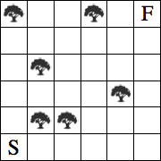
2.
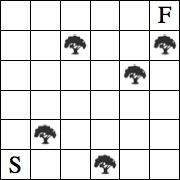
3.
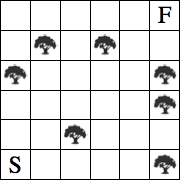
4.
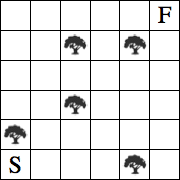
5.
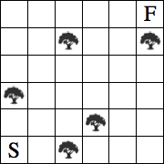
6.
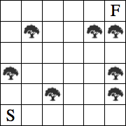
7.
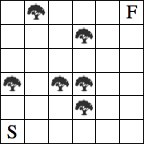
8.
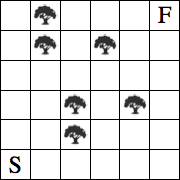
9.
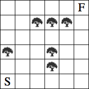
10.
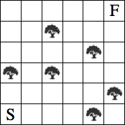
11.
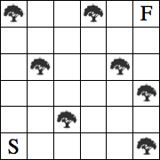
12.
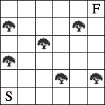
13.
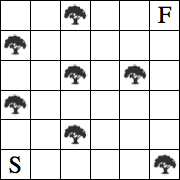
14.
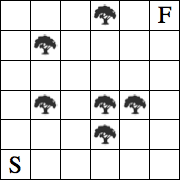
15.
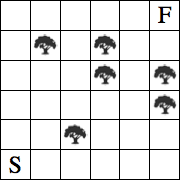
16.
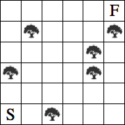
The solutions are here.